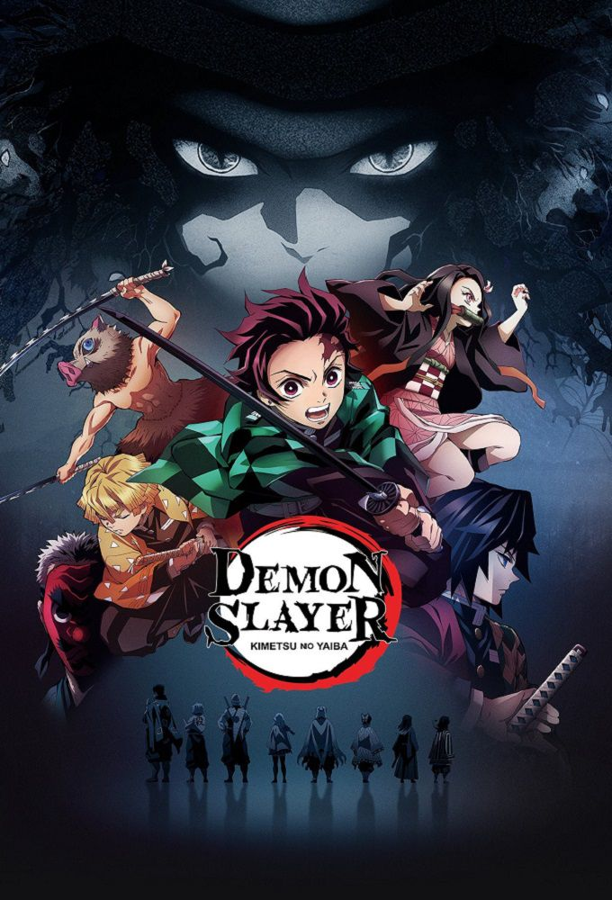
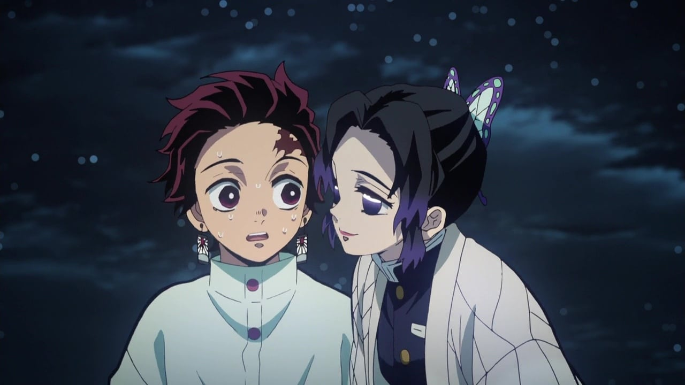

DEMON SLAYER
Depuis les temps anciens, il existe des rumeurs concernant des démons mangeurs d'Hommes qui se cachent dans les bois. Pour cette raison, les citadins locaux ne s'y aventurent jamais la nuit. La légende raconte aussi qu'un tueur de démons déanbule la nuit, chassant ces démons assoiffés de sang. Pour le jeune Tanjirou, ces rumeurs vont bientôt devenir sa dure réalité...
Depuis la mort de son père, Tanjirou a pris sur lui pour subvenir aux besoins de sa famille. Malgré cette tragédie, ils réussissent à trouver un peu de bonheur au quotidient.
Cependant, ce peu de bonheur se retrouve détruit le jour où Tanjirou découvre que sa famille est massacrée et que sa soeur survivante, Nezuko, est devenue un démon. A sa grande surprise, Nezuko montre encore des signes d'émotion et de pensées humaines. Ainsi, commence la dure tâche de Tanjirou, celle de combattre les démons et de rendre sa soeur humaine.
Informations
Titre original : 鬼滅の刃 / Les Rôdeurs de la Nuit / Demon Slayer : Kimetsu no Yaiba
Studio(s) : ufotable
Genres: Action – Aventure – Drame – Fantastique – Historique – Surnaturel
Durée : 24 mins
-
Episode 1 : Cruauté
-
Episode 2 : Urokodaki Sakonji, le formateur
-
Episode 3 : Sabito et Makomo
-
Episode 4 : La Sélection finale
-
Episode 5 : Chacun son acier
-
Episode 6 : Le chasseur accompagné d'un démon
-
Episode 7 : Kibutsuji Muzan
-
Episode 8 : Le Parfum du sang d'envoûtement
-
Episode 9 : Les Démons aux ballons et aux flèches
-
Episode 10 : Nous resterons ensemble
-
Episode 11 : La Maison aux tambours
-
Episode 12 : Zen'itsu dort, le sanglier montre les crocs
-
Episode 13 : Ce à quoi je tiens plus qu'à ma vie
-
Episode 14 : Le Blason des glycines
-
Episode 15 : Le Mont Natagumo
-
Episode 16 : Faire passer les autres avant soi
-

Episode 17 : Parfaire une seule technique
-
Episode 18 : Des liens factices
-
Episode 19 : Le Dieu du feu
-

Episode 20 : Une famille improvisée
-
Episode 21 : Violation du code
-
Episode 22 : Le Maître
-
Episode 23 : La Réunion des piliers
-

Episode 24 : L'Entraînement récupérateur
-

Episode 25 : Tsuyuri Kanao, la successeuse
-
Episode 26 : Nouvelle mission